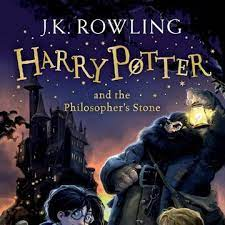
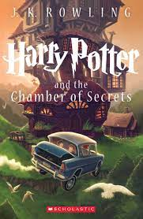
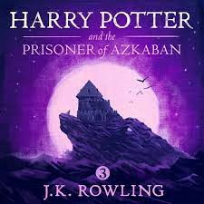
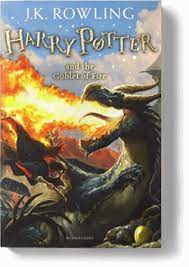

The Theory of Everything

Author: Stephen Hawking
Synopsis: n the 1960s, Cambridge University student and future physicist Stephen Hawking (Eddie Redmayne)
falls in love with fellow collegian Jane Wilde (Felicity Jones). At 21, Hawking learns that he has motor
neuron disease. Despite this -- and with Jane at his side -- he begins an ambitious study of time, of which
he has very little left, according to his doctor. He and Jane defy terrible odds and break new ground in the
fields of medicine and science, achieving more than either could hope to imagine.
Breif Answers to the Big Questions

Author: Stephen Hawking
'Brief Answers To The Big Questions' Is Stephen Hawking's Parting Gift To Humanity The physicist's posthumous
book highlights his belief in the rationality of nature and in our ability to uncover its secrets — and a
faith in science's ability to solve humanity's biggest problems.
I To Had A Love Story

Author: Rabindher Singh
Synopsis: The novel starts with a reunion in Kolkata of Ravin and his three male friends Manpreet, Amardeep,
Happy, who
used to study in the same engineering college. During the reunion they discuss their future plans of getting
married and all of them accept that they did not think about it.
Night At The Call Center

Author: Chetan Bhagat
Synopsis: The novel revolves around a group of six call center employees working at a call center in Gurgaon,
Haryana,
India. The themes involve the anxieties and insecurities of the young Indian middle class, such as career,
inadequacy, marriage, and family conflicts.
Harry Potter And The Philosopher's Stone

Author: J K Rowling
Synopsis:It is a story about Harry Potter, an orphan brought up by his aunt and uncle because his parents
were killed when he was a baby. Harry is unloved by his uncle and aunt but everything changes when he is
invited to join Hogwarts School of Witchcraft and Wizardry and he finds out he's a wizard.
Harry Potter and the Chamber of secrets

Author: Jk Rowling
Synopsis: The second instalment of boy wizard Harry Potter's adventures at Hogwarts School of Witchcraft and
Wizardry, based on the novel by JK Rowling. A mysterious elf tells Harry to expect trouble during his second
year at Hogwarts, but nothing can prepare him for trees that fight back, flying cars, spiders that talk and
deadly warnings written in blood on the walls of the school.
Harry Potter and the Prisoner Of Azkaban

Author: Jk Rowling
Synopsis: Harry Potter's (Daniel Radcliffe) third year at Hogwarts starts off badly when he learns deranged
killer Sirius Black (Gary Oldman) has escaped from Azkaban prison and is bent on murdering the teenage
wizard. While Hermione's (Emma Watson) cat torments Ron's (Rupert Grint) sickly rat, causing a rift among
the trio, a swarm of nasty Dementors is sent to protect the school from Black. A mysterious new teacher
helps Harry learn to defend himself, but what is his secret tie to Sirius Black?
Harry Potter and the Goblet Of Fire

Author: Jk Rowling
Synopsis: The fourth movie in the Harry Potter franchise sees Harry (Daniel Radcliffe) returning for his
fourth year at Hogwarts School of Witchcraft and Wizardry, along with his friends, Ron (Rupert Grint) and
Hermione (Emma Watson). There is an upcoming tournament between the three major schools of magic, with one
participant selected from each school by the Goblet of Fire. When Harry's name is drawn, even though he is
not eligible and is a fourth player, he must compete in the dangerous contest.